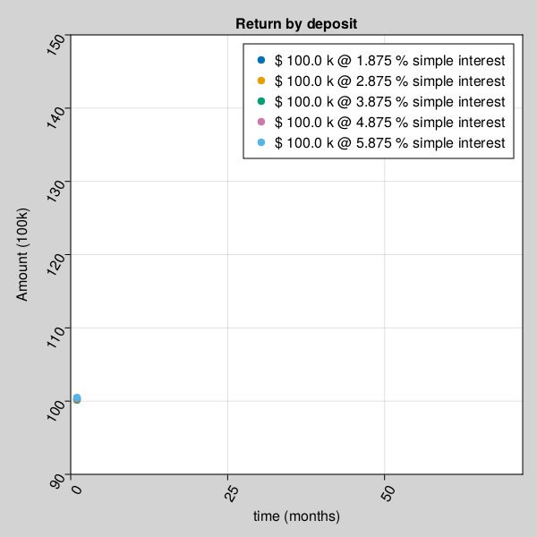
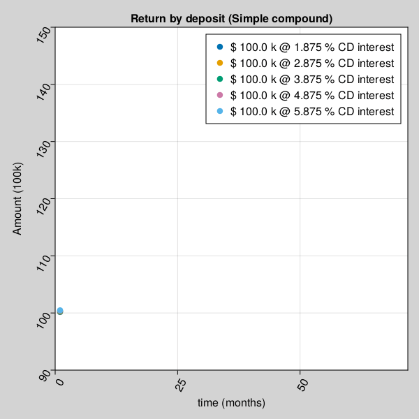
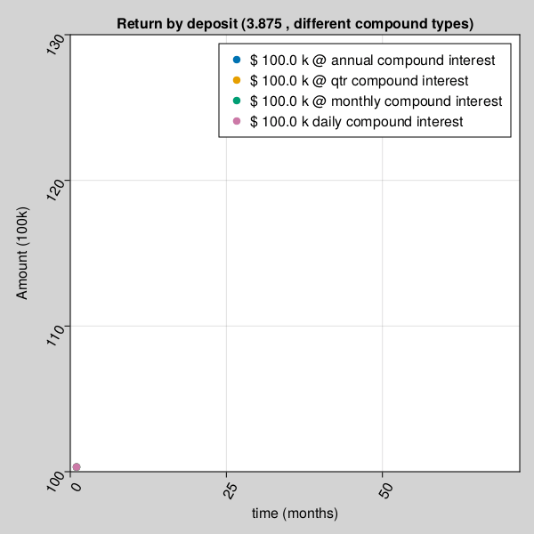

Finance Mathematics
There is no such thing as Finance Math. Math is Math, the mother of all languages. However, since our topic of interest is Finance, we will learn Mathematics from Finance perspective, which again is no different, other than more focused on Financial calculations.
Let's take another example, which is more familiar and relevant to Finance community.
BD = Buddy Deposit
CD = Certificate of Deposit
P = Principal amount
r = R/100
R = Rate of Interest
T = Time in years
n = compound (365 = daily, 12=monthly, 1=yearly)Buddy Deposit system
let’s say, one borrows money from buddy and return it on a simple yearly calculated interest condition (n=1). Lets assume, amount returned to friend has least constraints, like, if amount is returned less than 6 months, friends may not ask for any interest. For calculation purpose, we will keep formula very simple.
\[ BD = P (1 + r*t/n)\]
Using above formula, one can safely predict, The total amount accrued, principal plus interest, with simple interest on a principal of $100,000.00 at a rate of 3.875% per year over 7.5 years is $129,062.50.
Certificate Deposit, with complex compound interest
\[ CD = P (1 + r/n)^n*T\]
Using above formula, one can safely predict, The total amount accrued, principal plus interest, with compound interest on a principal of $100,000.00 at a rate of 3.875% per year compounded n=365 times per year over 7.5 years is $133,724.24.
A = P + I
where P (principal) = $100,000.00 I (interest) = $33,724.24
Calculation Steps:
First, convert R as a percent to r as a decimal
r = R/100 r = 3.875/100
r = 0.03875 rate per year
Then solve the equation for A
A = P(1 + r/n)^nt
A = 100,000.00*(1 + 0.03875/365)^(365)(7.5)
A = 100,000.00*(1 + 0.00010616438356164)^(2737.5)
A = $133,724.24Mutual Fund Deposit
\[ MFDeposit == GOK <=> god*only*knows\]
Sample Deposit data
Let's look at few sample results produced by different deposit types.
| depositType | Total_mean |
|---|---|
| CD-annual | 115225.67 |
| CD-daily | 115458.89 |
| CD-monthly | 115439.69 |
| CD-qtr | 115400.2 |
| Group A | 166967.26 |
| Group B | 125017.01 |
| Group C | 108009.86 |
| Group D | 73930.52 |
| buddy-simple | 114375.0 |
Univariate and Multivariate
Univariate statistical analysis refers to data analysis, when output depends only on one variable.
Multivariate statistical data analysis is applicable where output depends on more than one variables.
For example, in case of Buddy deposit, your friend promised to pay you back borrowed money with or without any interest or fixed or non-fixed time period (whenever available). After all, Buddy don't charge interest. In this case, amount received entirely depends on Principal amount borrowed, is a case if simple Univariate analysis.
In other case, when money is deposited as an investment, amount received on maturity depends on Principal amount, rate of interest, duration and interest type etc. is an example of Multivariate statistical analysis.
Let's take a closer look at few Univariate & Multivariate statistical analysis example, how amount received on maturity depends on associated variables.
for example, Amount received after a buddy deposit depends on interest rate and time.

for example, Amount received after a certificate deposit depends on interest rate, compound type and time.

Amount received after a certificate deposit depends on different compound interest rate type and time.
